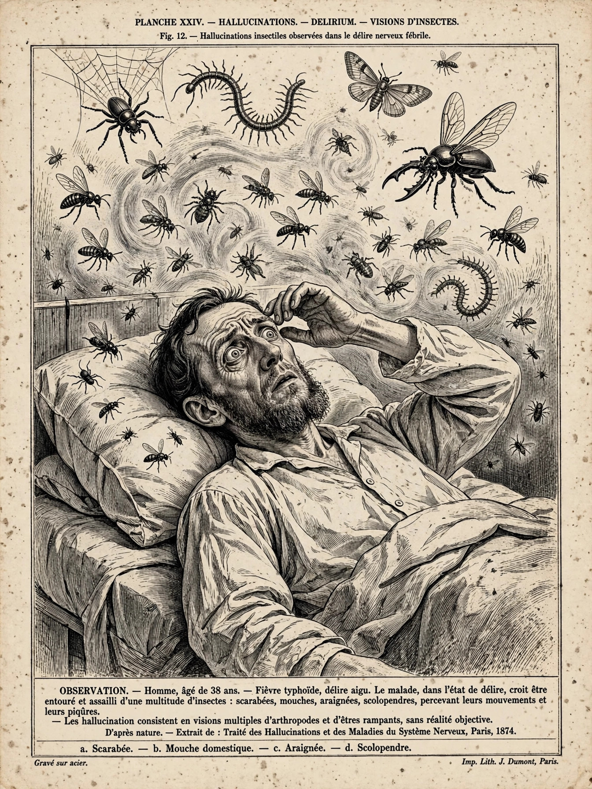

| Other names | DTs, alcohol withdrawal delirium |
|---|---|
| Specialty | Psychiatry, toxicology |
| Symptoms | Confusion, hallucinations, tremor, agitation, fever |
| Usual onset | 48–96 hours after last drink |
| Causes | Withdrawal from chronic heavy alcohol use |
Delirium tremens (DTs) is a severe, potentially life-threatening form of alcohol withdrawal occurring in people with chronic heavy alcohol use. It is characterised by acute confusion, vivid visual and tactile hallucinations, severe agitation, tremor, autonomic instability (fever, sweating, rapid heart rate) and, in some cases, seizures.
Chronic alcohol use suppresses brain activity, and the nervous system adapts; when alcohol is suddenly withdrawn, there is rebound hyperactivity of the brain. DTs typically begin 48 to 96 hours after the last drink, preceded by milder withdrawal symptoms such as anxiety, tremor and insomnia. Before modern treatment, mortality reached 15–40%; with prompt treatment — typically high-dose benzodiazepines, supportive care and thiamine supplementation to prevent Wernicke encephalopathy — mortality is around 1–5%.
Treatment is a medical emergency: patients are monitored in intensive care, sedated with benzodiazepines (often guided by symptom-triggered scales such as the CIWA-Ar), rehydrated, and given parenteral thiamine before any glucose administration. Most episodes resolve within two to three days, though full recovery from the episode of illness may take longer. The condition was first formally described in the early 19th century and is distinct from the milder "shakes" of ordinary withdrawal; it remains one of the most dangerous drug withdrawal syndromes known.